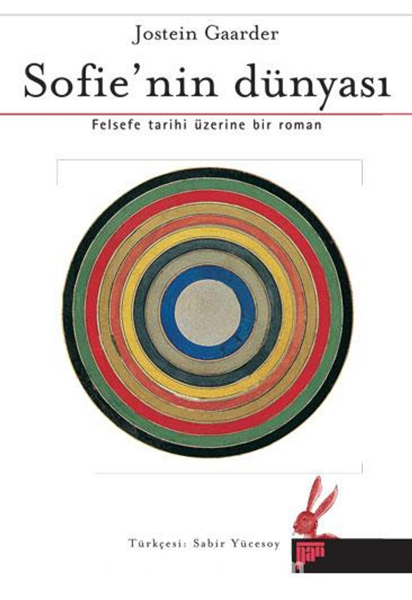

SOFIE'NİN DÜNYASI - JOSTEIN GAARDER
Hikayemiz 14 yaşındaki Sofie adlı karakterimizin posta kutusuna gelen içinde "Kimsin sen?" yazan bir mektup almasıyla başlıyor.
Kitapta başlığın altında da söylendiği gibi felsefe anlatılıyor. Sofie gizli bir felsefe öğretmeni ya da filozofla tanışıyor. Ondan ilk çağlardan itibaren Sokrates, Platon, arada Descarte, Spinoza, sonda Marx, Darwin derken birçok filozofu, felsefe akımını öğreniyor hikayede öyle devam ediyor.
Bu kitabı anlamanız için Platon'un öğrencisi ya da Decartesin mendili olmanıza gerek yok. Lise çağında olan biri rahatlıkla anlar. Küçük kardeşleriminde anlayacağını düşünüyorum. Sonuçta kitapta 14 yaşında olan bir karaktere felsefe anlatılıyor o da anlıyor. Yazar yani her yaşta okunabilecek bir kitap çıkarttığını kanıtlıyor. Ama okurken kafanız karışabilir. Ne güzel. Zaten kitaplar bizi düşünmeye itecek karışıklıklara yönlendirmiyorsa ne işe yarıyorlar. O yüzden çekinmeyin.